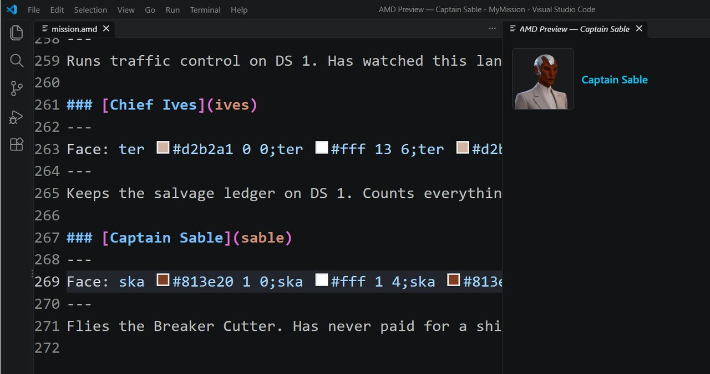

Class 2, Lecture 2 - Characters and faces¶
What you will have at the end¶
Three people live in your mission file: the harbormaster of DS 1, the chief who keeps its salvage ledger, and the captain of the Breaker Cutter. Each has a name, a key and a face, and each face is the same in every game.

mission.amd with Captain Sable's record, and the AMD Preview beside it showing her portrait.
You will edit one file, mission.amd: one new section with three records, and one line
in a quest. Nothing in story.mast changes.
Nobody speaks yet. A character is mostly shown in the game when they talk to the crew, and that is Lecture 3. Today you make the people, you look at them in the editor, and you put the harbormaster's face on a job in the Quest Log.
The video¶
About 7 minutes. Subtitles are available in the player.
Before you start¶
- Your mission as Lecture 1 left it: three sides, the Breaker Cutter and the Guild Yard.
sbs lint MyMissionsaysclean.- VS Code with the mission folder open and trusted, and the AMD add-on from Class 1,
Lecture 3. A command prompt open in
data\missions.
Words for this lecture:
| Word | Meaning |
|---|---|
| Character | A person in the story: a record with a name, a key and a face |
| Face | The portrait the crew sees when that person speaks |
| Keyword | One plain word after Face:, such as female. The game draws a face of that kind |
| Face string | One long line after Face: that spells out a face piece by piece. The editor writes it for you |
Step 1 - A Characters section, and one person¶
Open story.mast and look at line 48. You change nothing here:
In Lecture 11 this line was in your table as "a section keyed characters. Class 2". It
makes a person from each record of that section. So the section's key has to be exactly
characters.
Now go to the very end of mission.amd, below the Harbor Guild. Leave two blank lines,
then type:
// ---- Characters. The people in the story. `Face:` is how each one looks.
## [Characters](characters)
### [Harbormaster Quill](quill)
---
Face: female
---
Runs traffic control on DS 1. Has watched this lane for eleven years.
| Line | Meaning |
|---|---|
## [Characters](characters) |
The section. Two hashes, and the key is exactly characters |
### [Harbormaster Quill](quill) |
One person. Three hashes, the name the crew will read, then her key |
Face: female |
How she looks. One word for now |
| The last line | A description. It is a note for you. The game does not show it |
The word in round brackets, quill, is her key. From Lecture 3 on, everything that makes
her speak points at her by that key, never by her name. Keep a key in small letters, one
word, no spaces.
Save, and run lint:
It says clean.
Step 2 - What one word gets you¶
female is a keyword. There are seven.
| You write | The game draws |
|---|---|
Face: female or Face: terran_female |
A human woman |
Face: male or Face: terran_male |
A human man |
Face: fluid or Face: terran_fluid |
A human, with a mix of the two |
Face: terran |
A human: any of the above |
No Face: line, or nothing after the colon |
The same as terran |
A keyword does not choose a face. It asks the game to roll one: eyes, mouth, hair, clothes and skin, picked by chance each time the game starts. Tonight Quill is one woman. Tomorrow she is another. And about half the rolls come up with skin that is green, blue or pink.
That is fine for a voice the crew hears once. It is wrong for a person with a name. Your crew should know the harbormaster when she calls a second time.
A word that is not one of the seven does not roll anything. With Face: woman or
Face: skaraan the game is handed that word as her face, and it is no face. Lint says
clean.
Step 3 - A face that stays¶
To keep a face, the Face: line has to spell it out. That is a face string. This is
Quill's:
You are not meant to write one of these. The editor writes it, and you choose by looking.
- In VS Code, with
mission.amdopen, pressCtrl+Shift+P. A box opens at the top of the window. It is called the Command Palette, and it runs any tool the editor has. - Type
story graphand press Enter. The command is Artemis AMD: Show Story Graph. A new tab opens beside your file, with your records drawn as boxes, one band for each section. - Find the band for
charactersand the box Harbormaster Quill. Right-click the box and choose Edit.... A tab named AMD Inspector opens. It shows her record as a form: her name, and one box for each line of her fence. - Beside the
Facebox is a button, Face.... Click it. A list opens at the top of the window. - Choose Random Terran (female).
Look at mission.amd. The word female is gone, and a face string is in its place. The
Inspector draws that face beside the form. If you do not care for her, click Face...
and choose Random Terran (female) again. Each time is a new roll, and this time the
roll is written down. When you like her, save with Ctrl+S.
Your string will not be the one on this page, and that is right. To have the very face
this page uses, type the line above in place of yours. Type it exactly, or copy it from
example\mission.amd.
Step 4 - Change one thing about her¶
A roll gets you close. The Face Builder gets you the rest of the way.
In the Inspector, click the portrait. Or click Face... and choose Build custom.... A tab named AMD Face Builder opens. It starts from the face she already has.
| In the builder | What it does |
|---|---|
| Race | Which people she belongs to. Step 6 |
| A slider for each feature | For a human: Body, Eyes, Mouth, Hair, Facial Hair, Hat, Eyewear, Headset, Clothes, Skin Tone, Hair Tone. Each stop on a slider is one drawing |
| A tick box beside some sliders | Turns that feature off altogether: no hat, no eyewear |
| The picture | The face as it stands |
| Face string | The line being written for you |
Move the Hair slider. Her Face: line in mission.amd changes as you move it. There
is nothing to press. When she looks right, go back to mission.amd and save.
Step 5 - The second person¶
Back in mission.amd, below Quill's description, leave a blank line and type:
### [Chief Ives](ives)
---
Face: male
---
Keeps the salvage ledger on DS 1. Counts everything twice.
Save. Then give him a face that stays, the way you gave Quill hers. The Story Graph has drawn a box for him: right-click it, Edit..., Face..., Random Terran (male).
The face this page uses for him is:
Face: ter #d2b2a1 0 0;ter #fff 13 6;ter #d2b2a1 11 1;ter #d2b2a1 12 2;ter #934e2c 11 3;ter #fff 9 5;
Step 6 - Someone who is not human¶
A Breaker captain does not have to be one of yours. The game has six peoples.
| In the list | In the builder's Race box |
|---|---|
| Random Terran (female), Random Terran (male) | terran: humans |
| Random Skaraan | skaraan |
| Random Kralien | kralien |
| Random Torgoth | torgoth |
| Random Arvonian | arvonian |
| Random Ximni | ximni |
Only humans have keywords. For the other five there is no word to type after Face:.
The face string is the only way, so the editor is the only way.
Type the third person below Chief Ives:
### [Captain Sable](sable)
---
Face: female
---
Flies the Breaker Cutter. Has never paid for a ship in her life.
Save. In the Story Graph, right-click her box, Edit..., Face..., and choose Random Skaraan. The face this page uses for her is:
Save. Run lint: clean.
Step 7 - Four rules for a face string¶
You will copy these lines, move them and paste them. They break easily.
- One line. However long it is, do not press Enter in the middle of it. Turn off nothing in your editor: a long line may be drawn on two rows of the screen, and it is still one line.
- All of it. Every piece ends with a semicolon, the last one too.
- No quote marks round it.
- Change it with the builder, not by hand. The numbers are places on a sheet of drawings. One wrong digit is another hat, or a nose where the eyes go.
Copying a whole line from one person to another is fine. It makes twins.
Your finished section¶
At the end of mission.amd:
// ---- Characters. The people in the story. `Face:` is how each one looks.
## [Characters](characters)
### [Harbormaster Quill](quill)
---
Face: ter #e4cb8e 1 0;ter #fff 12 6;ter #e4cb8e 3 1;ter #e4cb8e 5 2;ter #704025 7 3;
---
Runs traffic control on DS 1. Has watched this lane for eleven years.
### [Chief Ives](ives)
---
Face: ter #d2b2a1 0 0;ter #fff 13 6;ter #d2b2a1 11 1;ter #d2b2a1 12 2;ter #934e2c 11 3;ter #fff 9 5;
---
Keeps the salvage ledger on DS 1. Counts everything twice.
### [Captain Sable](sable)
---
Face: ska #813e20 1 0;ska #fff 1 4;ska #813e20 2 1;ska #813e20 1 2;ska #fff 4 3;
---
Flies the Breaker Cutter. Has never paid for a ship in her life.
The whole file is in example\.
Step 8 - Check it¶
Lint is a poor judge of this lecture. It knows where a person's record belongs and how a
fence is built. It does not look at what comes after Face: at all. So read the second
table with care.
Every row below was made on purpose, one at a time, on the finished file. Lint was run, and then the game was run without a screen, by a script that asked the game which people it had made and what face each one holds.
Lint names these.
| Mistake | What the game does | Lint says |
|---|---|---|
## [Characters](character), ## [Cast](cast) or ## [People](people) |
Makes nobody | section-not-loaded. Its sentence lists the keys the story asks for |
| The Characters line typed with one hash | Makes nobody | heading-level-jump, an error, and section-not-loaded for each person |
| A person typed with two hashes | Makes the people above that one, and nobody from there down | section-not-loaded, about that person's key |
### [Chief Ives] (no key), or ### Chief Ives (no brackets) |
Does not make him | broken-heading, an error |
| Two people with the same key | Makes the upper one only | duplicate-key |
| A person typed up in the Landmarks section | Makes no person from that record | landmark-no-art, landmark-no-loc and landmark-no-kind: she is read as a place |
Face female (no colon) |
Makes her with a rolled human face | fence-syntax, an error: it expected Label: value |
| A face string broken onto two lines | Makes her with half a face string | fence-syntax, an error, on the second half |
Faces: or Portrait: for Face: |
Ignores the line. She gets a rolled human face | unknown-field |
A line a person does not have: Side:, Art:, Name:, Title: |
Ignores the line | unknown-field |
A person's closing --- left out |
Makes her, with no description | unclosed-data-fence, an error |
A curly apostrophe or an accent in a name: O'Ives typed in a word processor, Ives with an accent on the e |
Shows the plain letter in its place | non-ascii |
Line 48 of story.mast deleted |
Makes nobody | section-not-loaded |
A # typed in front of line 48 of story.mast |
Makes nobody | section-not-loaded |
What lint cannot see. For every row of this table lint says clean.
| You wrote | What happens |
|---|---|
Face: woman, Face: skaraan, Face: random or Face: none |
No face is rolled. The word itself is handed to the game as her face, and it is not one. Only the seven words of Step 2 are keywords |
| A face string with quote marks round it | The quote marks become part of the string. It is no longer a face |
| A face string cut short, or with commas where the semicolons go | The same: it is handed on as you typed it, and it is not a face |
A face string with its # signs left out |
The same |
| A face string with the last semicolon left off | Handed on as you typed it. Nobody has looked at what the game draws. Keep the semicolon |
| A keyword on a person with a name | A new face every game (Step 2) |
The Face: line typed below the closing --- |
It is read as her description. She gets a rolled human face |
Two Face: lines in one fence |
The lower one is used |
| The Characters line typed with three hashes, or left out | Makes nobody. Your people are read as SIDES: the game makes three sides called quill, ives and sable |
| A person typed up in the Sides section | Makes a side with her key, and no person |
| A person typed with four hashes | Does not make that person. The people above and below are made |
## [Characters](Characters) (a capital in the key) |
Works. Keep it in small letters all the same |
A key with a capital or a space in it: (Quill), (harbor master) |
Makes her under that key, capital, space and all. Nothing in Lecture 3 will find her by quill |
A key another kind of record already has: (guild), (salvage) |
Makes him. Lecture 3 points at people, sides and quests by key, and two things with one key is a muddle. Give every record its own |
Loc: 0, 0, 0 on a person |
Ignored. A person is not on the map |
Color: #F80 on a person |
Read, and used by nothing in a mission like yours |
Roles: captain on a person |
She wears that role. Nothing in this class uses a person's role |
These are fine.
| You wrote | Result |
|---|---|
Face: Female (a capital), or face: female (a small f on the label) |
Works |
| A person with no fence at all: a heading and a description | Works. She gets a rolled human face |
| A person with no description | Works |
A plain apostrophe, a hyphen, round brackets or curly brackets in a name: Chief 'Two-Count' Ives (ret.) |
Works. The name is kept as typed |
Step 9 - Look at them¶
Nothing new shows in the game yet. Start it if you like: the map, the sides and the story are as Lecture 1 left them, and both logs are empty afterward. The three people are made, and they wait.
You can look at them in the editor.
- In
mission.amd, click anywhere inside Quill's record. - Press
Ctrl+Shift+P, typepreview node, and press Enter. The command is Artemis AMD: Preview Node. A tab opens with her portrait and her name. - Do the same inside Ives's record, and inside Sable's.
Try it once on a keyword. Change Sable's line to Face: female and preview her twice:
two different women. Then press Ctrl+Z until her face string is back.
Step 10 - Her face on a job¶
Nobody speaks until Lecture 3, but one place in the game can show a face today: the Quest Log. In Class 1 you learned that a quest's description is a page, with paragraphs, headings and a table. A page can also hold a portrait.
Quill runs traffic control, and she is the one who has been calling the hulk. Put her face on that job. Find Close Inspection in the Quests section. Above the first line of its description, add one line and a blank line:
#### [Close Inspection](approach)
---
Scope: shared
Starts when: at once
Objective: Close to within 500 of the hulk
Done when: reach derelict 500
Reward: 100 credits
Then: reveal salvage/boat
Part of: salvage
Required: true
---
 Harbormaster Quill, DS 1 traffic control
The hulk is not answering hails. Bring the ship in close and take a look.
Leave the rest of the description as it is. Do not type the face string: copy it.
- Go to Quill's record and select everything after
Face:, down to the last semicolon. PressCtrl+C. - Go back to Close Inspection. Type
. - Type a space and the words that go beside her picture.
| Part | What it is |
|---|---|
 |
The end of the face |
Harbormaster Quill, DS 1 traffic control |
Drawn beside the portrait. Who is speaking, and from where |
Save. Run lint: clean. Lint does not read this line at all, so it says clean for
every row of this table too:
| Mistake | What the Quest Log does (read in the library's code, not yet seen in the game) |
|---|---|
A space between ] and ( |
No portrait. The line is drawn as typed, marks and all |
The ) left off |
The same |
| Half a face string | It is handed to the game as typed, and it is not a face |
face://quill, the key in place of the string |
The same. The page does not look people up |
If you change her face later, change this copy too. Nothing joins the two. A good habit: every time you use the builder on Quill, search the file for her old string.
Start the game and open the Quest Log (the ePADD, then Quests). Close Inspection is there from the start. Her portrait is on the right, under the order line and above the first paragraph, small, with her name beside it. That is the first time anyone in the game sees her.
If something goes wrong¶
| What you see | Likely cause |
|---|---|
| The Command Palette has no Artemis AMD commands | The add-on is not installed, or the folder is not trusted. See Class 1, Lecture 3 |
The Story Graph has no band for characters |
The section's line is missing or has the wrong number of hashes. Run lint |
| The Inspector has no Face... button | The record has no Face: line. Type Face: female in its fence, save, and open the Inspector again |
| The Inspector and the builder draw no picture | The add-on cannot find the game's drawings. They are in the data\graphics folder of the game. Your mission folder has to be inside the game's own data\missions folder. The Face: line is still written: go by the string |
| The list, the Inspector or the builder does not open at all | Type the line from this page in place of the keyword. A face string typed by hand is the same as one the builder wrote |
Lint says fence-syntax on a line that begins ter or ska |
A face string was broken onto two lines. Join it up again |
Lint says section-not-loaded about characters, and your story.mast has no line that begins lifeforms_spawn( |
Your mission was made by an older copy of the tool. Make a fresh mission with sbs create, and copy its story.mast lines 46 to 49 into yours, above the line that begins landmarks_spawn( |
| In Lecture 3, someone speaks and the portrait is missing or wrong | Their Face: line is not a keyword and not a whole face string. Read the second table of Step 8 |
Exercise¶
Add a fourth person of your own, from a people you have not used.
- Below Captain Sable, write a record: a name, a key,
Face: female, and one sentence about who they are. Somebody on the Harbor Guild's side would round out the cast. - Save. Open the Inspector on the new box and choose a Random face from one of the peoples you have not used yet.
- Click the portrait to open the builder. Change two sliders, and turn one feature off with its tick box.
- Save, and run lint.
- Preview all four people, one after the other.
Checkpoint¶
You are done when all five are true:
sbs lint MyMissionanswersclean, with0 error(s), 0 warning(s).- Your file ends with a section keyed
characters, holding three records, each with three hashes and a key of its own. - Every
Face:line is a face string on one line. None is a keyword. - Preview Node shows the same portrait for Quill each time you run it.
- Close Inspection's description starts with Quill's portrait, her face string copied letter for letter, and her name beside it.
Next¶
Lecture 3 gives Harbormaster Quill something to say, and the story a moment to say it.
Further reading¶
- "Sides, lifeforms & faces" in the library documentation, the parts headed "Lifeforms" and "Faces". Both are about script. They show where a face string comes from.
- "Get started: build a character and a scene" in the Open Universe writer's guide, the
editor pages. It is the tour this lecture is drawn from. Two things in it do not fit a
mission like yours. Its step 3 makes a character by double-clicking the Story Graph:
that writes a section keyed
lifeforms, which yourstory.mastdoes not read, and lint sayssection-not-loaded. And it describes an Inspector docked at the left edge of the window, which this copy of the add-on does not have. - The game has a face editor of its own, the Avatar Editor, in Legendary Missions. It copies a face string each time you change something, and the Face... list has Paste from Avatar Editor to drop it into a record.
Download this lecture's finished files (a zip of its example folder).